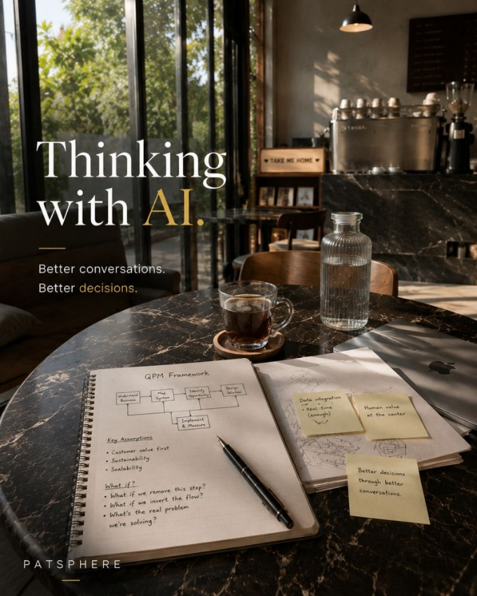
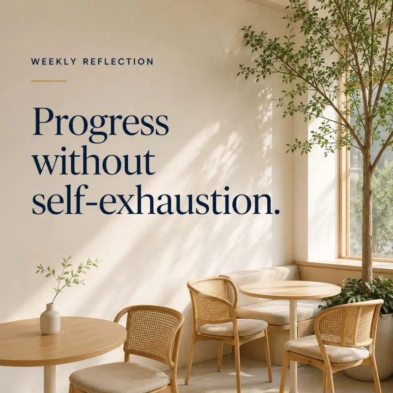

REFLECTIONS & INSIGHTS
Thoughts shaped by experience, observation, and the work behind the work.
Think deeper · Act wiser · Grow together

FEATURED REFLECTION

Weekly Reflection
Good advice does not begin with solutions. It begins with the right diagnosis.
The role of an advisor is not to answer quickly. It is to identify what is actually creating the problem.
EXPLORE REFLECTIONS
Browse by theme.
More reflections and insights are shared regularly on LinkedIn.
Connect on LinkedInIndividual post links will be added in the next content update.